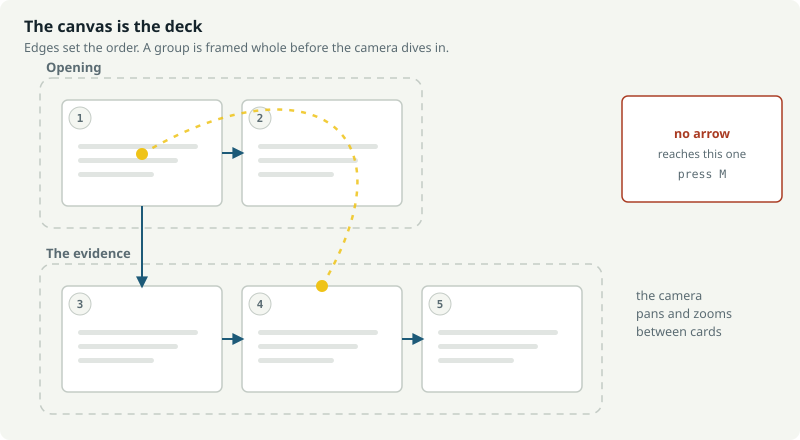
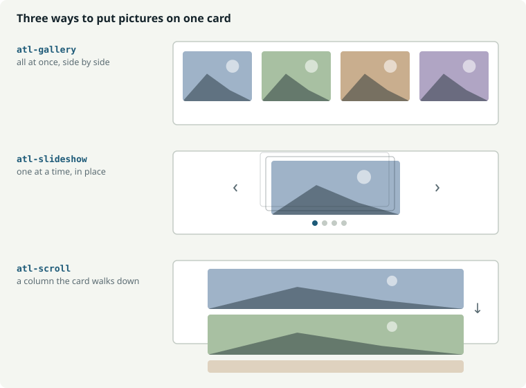

Atlas Presenter
A presentation is a camera flying over a map, not a queue of slides. Atlas turns an Obsidian canvas into a deck: the arrows are the running order, the groups are the sections, and the whole thing stays a canvas you can edit.
What it is
Most presentation tools ask you to flatten your thinking into a list. A canvas is already the shape of an argument — things side by side, branches, a detour you might take if someone asks. Atlas presents that shape directly.

Nothing to convert
The canvas file is the deck. Edit it and present again.
The map is a feature
Press O mid-talk, read the whole map, click where you need to be.
Your notes are there
Click a wikilink to read the note over the deck, then carry on.
It leaves the vault
Export one self-contained HTML file. Print it for a PDF.
Install
With BRAT (easiest, gets updates)
Install the BRAT community plugin, choose Add a beta plugin for testing, and paste the repository URL. BRAT keeps it up to date.
From a release
Download main.js, manifest.json and
styles.css from the latest release into
<vault>/.obsidian/plugins/atlas-presenter/, then enable
Atlas Presenter under Settings → Community plugins.
After updating, reload Obsidian with Ctrl+R. A plugin already loaded in memory does not pick up new files on its own.
Your first deck
- Make a canvas and put three text cards on it.
- Drag an arrow from the first to the second, and the second to the third.
- Open the command palette and run Atlas Presenter: Present.
That is the whole idea. → advances, Esc leaves. With a card selected on the canvas, the deck opens on that card — useful when you are working on slide nineteen.
The plugin ships a folder of demo canvases. 5 · Cheat sheet is the one to read: every card on it demonstrates the thing it describes.
The commands
Six, of which two are the ones you will actually use.
| Command | What it does |
|---|---|
| Present | One screen. Fills this window, starting on the selected card. The everyday one. |
| Present on a second screen | The deck opens in a window of its own — drag it to the projector. See Two screens. |
| Present from the beginning | Ignores what is selected and starts at the first card. |
| Present a variant… | Asks which talk to give, if the canvas has variants. |
| Stop presenting | Ends the talk from this window, wherever the deck is. |
| Preview the export | Opens the exported deck, running, in a tab beside the canvas. |
| Export to HTML | Writes one standalone file. Works with or without a deck running. |
All of them need a canvas to be the open tab. They are also on the right-click menu of any canvas in the file explorer, and the ribbon icon presents the current one.
Atlas sets no keyboard shortcuts. Defaults collide between plugins and differ across platforms, so the choice is yours: Settings → Hotkeys, search Atlas. A pair worth binding is Present on a second screen and Stop presenting. Avoid combinations built on Enter — Obsidian's capture box treats it as confirm, so they never save.
Keys while presenting
| Key | |
|---|---|
| → Space PageDown | Reveal, then the pictures, then the next card |
| ← PageUp | Back, the same way |
| M | The schematic map — titles and order, for a deck too big to read at once |
| G | Obsidian's graph view of the whole vault |
| Backspace | Return from a jump, or one level out of a peeked note |
| O | The overview — the whole map at once, cards readable; click one to go to it |
| Home End | First and last card |
| Enter | Dive into the sub-deck on this card |
| B | Blank the screen — attention on the room, not the slide |
| N | Note something against the card on screen |
| W | Write the session up now |
| P | Open the presenter window |
| E | Export the deck to one standalone HTML file |
| F | Fullscreen |
| Esc | Close the map or the note, then leave the deck |
Clicking the right two-thirds advances; the left third goes back. Clicking a control inside a card never advances the slide. Keys held with Ctrl, Cmd or Alt belong to Obsidian, not the deck — so your own shortcuts still work mid-talk.
Two screens
Two ways round, differing in which window the deck takes over.
| Command | Use it when |
|---|---|
| Present, then P | The projector is your main display. The deck fills this window; P opens a presenter window — notes, the clock, what is coming — to put on your own screen. |
| Present on a second screen | You want to keep working. The deck opens in a window of its own: drag it to the projector and press F. This window is never touched, so the canvas stays in front of you, and the presenter panel opens in the sidebar beside it. G opens the vault graph on your screen while the projector goes on showing the card. |
Speaker notes are never in both places at once. The moment there is a
presenter panel to read them in — and always when the deck has a window of its
own — %%notes%% come off the deck itself, whatever the on-screen
notes setting says. The deck is what the room sees.
Order and sections
Arrows set the order. The deck follows them depth first: a branch is told to its end before the next one begins. A card with no arrow into it is a starting point; if there are several, they run in the order the canvas stores them.
Groups become sections. Any card geometrically inside a group belongs to it, and the group's label names the section — shown on the map above the group, and in the header while you are inside it. Turn on Section overviews and the camera pulls back to frame the whole group before diving into its first card.
#start on a card begins the deck there, whatever the arrows say.
Markdown and reveals
Cards are ordinary Obsidian markdown. Headings, bold, links, callouts, embeds.
## The decision
We are going with option B.
+++
Because option A needs a survey we do not have.
%%Pause here. Someone always asks about the survey.%%| Written | Does |
|---|---|
+++ on its own line | Everything after it waits for the next press |
%%…%% | A speaker note — never on the card, shown in the presenter panel |
[[A note]] | Click it while presenting to read that note over the deck |
A card longer than the screen scrolls: pressing → scrolls it before moving on, so a long note can be read in place without leaving the deck.
Pictures
Three ways to put more than one picture on a card.

| Tag on the card | Pictures are |
|---|---|
#gallery | All at once, side by side |
#slideshow | One at a time — → moves to the next before leaving the card |
#scroll | A column you scroll through |
Put pictures inside a card, not on their own. A media card is named by its filename, which is fine when you chose it and poor when a camera did. A picture in a card with a heading gets a name you chose and a caption for free.
Card roles
A line holding nothing but tags is an instruction. It is removed before the card is drawn, so it never reaches the slide — which means the note stays readable and shareable on its own, with no CSS in it.
Every Atlas theme implements the same names, so a deck written against one theme works against all of them.
| Tag | The card becomes |
|---|---|
| (none) | An ordinary card: heading and text |
#title | The opening card — large heading, a line beneath |
#section | A divider carrying only the section's name, inverted |
#quote | A pull quote, set large with an opening mark |
#stat | One large number, centred, with a line about it |
#dark | The same card, inverted — for a point you want to land |
#agenda | A running order: numbered, set large, one line to a row |
#end | The closing card — thanks, a contact, a next step |
#full | A picture with no margin, filling the card |
#split | Two flowed columns — text spills from one into the next |
Placed layouts
#split flows: text runs out of the bottom of the left column into
the top of the right, and you cannot say what goes where. These four let you say.
They split the card at a --- rule.
#two
# This heading spans both
---
The left column.
---
The right column.| Tag | The card becomes |
|---|---|
#two | Two columns, side by side, equal width |
#compare | The same, drawn as two panels being weighed against each other |
#left | A picture filling the left half, text centred on the right |
#right | The mirror — text left, picture filling the right |
Two blocks make two columns. A first block of nothing but headings becomes
a band across the top instead of a column. For #left and
#right, the order on the card is the order on the screen — write the
picture first for #left, second for #right.
+++ reveals work inside a column.
Tables and lists
Neither needs a tag. Obsidian's own table styling is sized for a note at 14px
inside a card the camera then scales onto a projector — a postage stamp in the
wrong colours. Atlas restyles both for a slide: a ruled header row, banded rows,
tabular numerals, markdown's ---: and :---: alignment,
accent-coloured bullets and real checkboxes for a task list.
| Option | Weeks | Cost | Risk |
| --- | ---: | ---: | :---: |
| Do nothing | 0 | £0 | High |
| Patch it | 4 | £18k | Medium |HTML cards
For a card that needs full control, write HTML in a fenced block. It renders into a shadow root, so its CSS cannot leak into the rest of the deck and the deck's CSS cannot reach in.
```html
<style> .box { padding: 8cqh; font-size: 4cqh; } </style>
<div class="box">Anything you like</div>
```
Use container-query units — cqh, cqw — rather than
pixels, so the card scales with the screen instead of fighting it.
Scripts
A card can carry a <script>. Script execution is off by
default — turn it on in settings, for vaults where you trust the cards.
Two things are already in scope:
var box = root.querySelector('#chart'); // root = this card's shadow root
host.addEventListener('atlas:enter', start);
host.addEventListener('atlas:leave', stop);
Look things up through root: document sees a different
tree and finds nothing. Anything thrown is printed on the card rather than lost.
Scripts travel with an export, wrapped so that root and host
mean the same there, and the card is told atlas:enter and
atlas:leave as it comes on and off camera. They are only included
when this setting is on: a card not trusted to run in Obsidian should not start
running because it was sent to somebody.
How a card is named
The same name is used on the map, in the next-card line, in the presenter panel and in the minutes.
| The card | Is called |
|---|---|
Opens with ## The decision | “The decision” |
| A tag line, then text | The first line of real content — tags and notes are skipped |
site-plan.png | “site-plan” |
Pasted image 20251029102222.png | “Image · 29 Oct 2025” — clearly automatic names are replaced |
The #deck card
A card tagged #deck is never presented and never appears on the map.
It dresses this canvas alone, so a client deck and an internal one can look
different without anyone going into plugin settings.
#deck
theme: Atlas/Themes/Paper.css
header: {deck} · {section} · {n}/{total}
logo: Assets/logo.png
transition: fade
# Northwind Depot
Controls plan, rev A · **Sam Avery**
key: value lines set options. Anything else is the deck's title
block, rendered into the band above a section overview. In the header,
{deck}, {section}, {n},
{total} and {date} are filled in as you go.
Themes
A theme is one CSS file in your vault. Point at it in settings, or per canvas
with a theme: line on the #deck card.
Paper
Editorial light — warm paper, near-black ink, deep blue accent.
Slate
For a dim room — deep slate cards, pale text, a cool accent.
Plain
Follows your Obsidian theme. Nothing imposed but the roles.
To make your own, copy one and change the tokens at the top —
--paper, --ink, --accent,
--rule and the fonts. Everything below them is the same in every
Atlas theme, so a deck re-skins without a card changing.
One map, several talks
The same canvas often serves a ten-minute version and an hour. Tag cards rather than duplicating the canvas.
| Tag | Means |
|---|---|
#skip-short | Leave this card out of the talk called “short”. It stays in every other one. |
#only-short | Show this card in “short” and nowhere else. |
Run Present a variant… and Atlas offers the talks it finds. A
variant: line on the #deck card names the default.
Sub-decks
Put a .canvas file on a canvas as a card and it is drawn to scale —
you can see how big the detour is before taking it. Press Enter to
present it, and Esc to come back to the card you left, with the same
history and the same notes still gathering.
Export, preview, PDF
Export to HTML writes one self-contained file to your vault root: every picture, video and sound inlined, the stylesheet embedded, no Obsidian and no network. It opens in any browser, on any machine.
The exported file behaves like the deck — reveals step, slide shows move, O opens the overview and M the schematic map, B blanks, and a card's own script runs if this vault allows it.
Open the exported file in a browser and print it. The same file carries a second, print-only layout: one card per page, landscape, every reveal shown and picture stacks un-stacked, so nothing is lost on paper. PDF is deliberately the browser's job — its engine is better than anything a plugin would ship.
Preview, and the edit loop
Preview the export opens that same document, running, in a tab beside the canvas. Press Refresh after editing and it rebuilds. Nothing is written to the vault — it exists to answer “what will the person I send this to actually see”, which only the exported document can answer.
The export is a file, not a live view. There is no auto-refresh, because
a page opened from file:// cannot watch your vault. Re-exporting
overwrites the same path, so the loop is: edit → export → F5 in the
browser tab.
Notes and minutes
N writes a note against whichever card is on screen. One card holds one note, kept at the time it was first made, so pressing N twice adds to it rather than starting a blank one you cannot see.
W opens the whole session — every card that carries anything, in the
order you visited it, each editable in place. A line written as
- [ ] something is counted as an action. Create the note when it
reads right, and Atlas writes a dated minute with the cards, the notes and the
actions, then opens it.
Every # line
Two families. Markers change what a card is; roles change how it looks. Both are stripped before the card is drawn.
| Line | Means |
|---|---|
#deck | This card is the deck's title block and settings. Never presented. |
#start | Begin the deck here, whatever the arrows say. |
#skip-x | Leave this card out of the talk called x. |
#only-x | Show this card in x and nowhere else. |
#gallery #slideshow #scroll | How this card's pictures are laid out. |
| Roles | #title #section #quote #stat #dark #agenda #end #full #split |
| Placed layouts | #two #compare #left #right |
Any other bare tag line becomes a CSS hook on the card —
#costing gives you .atl-tag-costing to style in your
own theme. A tag shown inside a code block is documentation, not a hook.
Settings
Settings → Community plugins → Atlas Presenter. The panel is grouped, and the bottom of it is a full reference with copyable examples — the same material as this page, inside Obsidian.
| Group | Covers |
|---|---|
| Starting a presentation | The handbook, your shortcut, and a button to Obsidian's hotkey pane |
| Camera | Flight duration, section overviews, framing padding, contain/cover, maximum zoom |
| Background | Backdrop colour or image with dimming, theme stylesheet, accent, off-camera card opacity |
| Logo | Any vault image, corner, height, opacity |
| Pictures and media | Slide show transition, how pictures fit, video autoplay |
| On screen | Bottom bar and counter, header line and where it shows, section titles, card alignment, speaker notes, next-card title, progress rail, timer |
| Notes and minutes | Where minutes are filed, write-up on leaving, what goes in an action |
| Browsing the vault | What G opens — Obsidian's own graph view, or the one inside the deck |
| HTML cards | Whether a card's <script> may run. Off by default |
| Reference | The full authoring reference, with copyable snippets |
If something is wrong
| What you see | Why |
|---|---|
| A command is missing from the palette | A canvas must be the open, active tab. The commands hide themselves otherwise. |
| A hotkey does nothing | Check it saved: Settings → Hotkeys, search Atlas. Combinations using Enter cannot be recorded. |
| New features are not there | Reload Obsidian with Ctrl+R after updating. |
| A card script does nothing | Script execution is off by default. Turn it on under Writing cards. |
| The theme picker is full of noise | Stylesheets under a Themes/ folder are listed first. Put yours there. |
| Arrow keys move a card on the canvas | Should never happen — the deck swallows every navigation key. Please report it. |